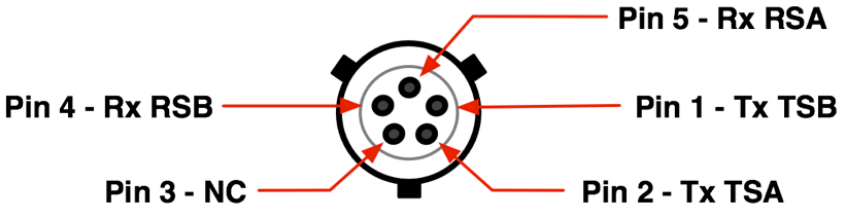

IO629 Pin Mapping — Reference information about the I/O module connector
The Speedgoat IO629 I/O module provides two types of ARINC 629 physical interfaces: a TTL interface and a SIM interface. The TTL interface is located on the rear panel of the IO629 and is referred to as connector J1, and the SIM interface is located on the front panel.
Depending on the hardware variant, two (IO629-2) or four (IO629-4) ARINC 629 modules are available in the device.
| Pin | Port J1 TTL Signals (ARINC 629) |
|---|---|
| 1 | CH1 MIFS IN |
| 2 | CH1 CMPD IN |
| 3 | CH1 MAFS IN |
| 4 | CH2 MIFS IN |
| 5 | CH2 CMPD IN |
| 6 | CH2 MAFS IN |
| 7 | CH3 MIFS IN |
| 8 | CH3 CMPD IN |
| 9 | CH3 MAFS IN |
| 10 | CH4 MIFS IN |
| 11 | CH4 CMPD IN |
| 12 | CH4 MAFS IN |
| 13 | Ground |
| 14 | 629 CH1 TXO |
| 15 | 629 CH1 TXN |
| 16 | 629 CH2 TXO |
| 17 | 629 CH2 TXN |
| 18 | 629 CH3 TXO |
| 19 | 629 CH3 TXN |
| 20 | 629 CH4 TXO |
| 21 | 629 CH4 TXN |
| 22 | (Jumper J2) PWR 629 CH1 N15O |
| 23 | (Jumper J4) PWR 629 CH2 N15O |
| 24 | (Jumper J7) PWR 629 CH3 N15O |
| 25 | (Jumper J8) PWR 629 CH4 N15O |
Depending on the hardware variant, the IO629 provides 2 or 4 ARINC 629 ports. The SIM interfaces are identified as A, B, C and D on the hardware. Each port can connect to an ARINC 629 Current Mode Coupler (CMC), for example, SCI 5242500 or equivalent.
The pinout for a SIM port is as follows:
